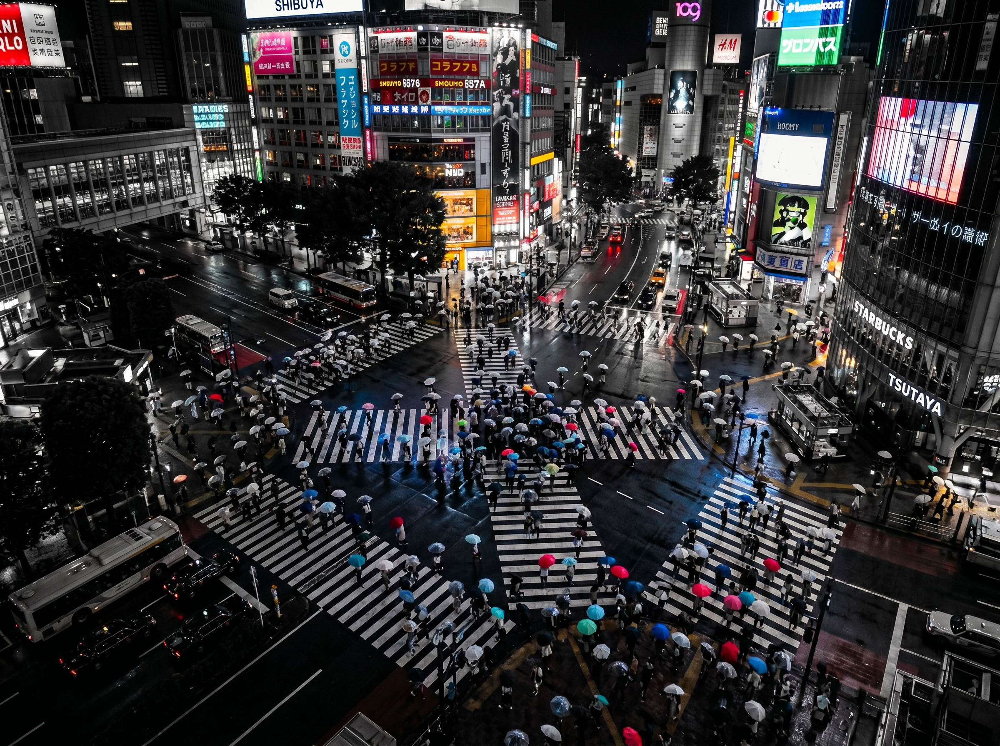

The Unspoken Agreement of 3,000 Souls — Why the People of Tokyo Rarely Collide
by Kiri
Imagine a single art poster hanging quietly on a wall.
Thousands of people crossing like particles of color. Some moving east. Others drifting diagonally toward another corner. Nobody stopping. Nobody shouting. And yet, somehow, the entire movement remains perfectly ordered.
This is Shibuya Scramble Crossing — perhaps the most famous intersection in the world. To a first-time visitor, it may appear to be pure chaos. But if you keep watching for a little longer, another reality begins to emerge.
Hidden beneath the movement is something extraordinary: a silent agreement shared by 3,000 strangers.

Shibuya Scramble Crossing — thousands of strangers, one silent agreement. The chaos is real. So is the order hiding inside it.
The 0.1-Second Prediction
During a single green light, as many as 3,000 pedestrians begin walking at once.
And yet, despite that density, people almost never collide. No shouting. No pushing. Hardly even a brushed shoulder.
Why?
Are the Japanese telepathic?
The answer is quieter than that. And far more human.
Japan has a social instinct known as kuuki wo yomu — literally, "reading the air." But the phrase means more than simply sensing a mood. It is the unconscious ability to predict the movement of others before it happens.
No eye contact. No instruction. And yet, no collision. Kuuki wo yomu — reading the air — at work in the everyday flow of the city.
Look closely at the people inside the poster.
Most are not making eye contact. Some are looking at their phones. Others stare toward distant buildings.
And yet their awareness is constantly scanning the movement around them.
Walking speed. Body angle. Tiny shifts in direction. A subtle slowing of pace.
All of this is processed almost instantly — in fractions of a second. Thousands of micro-adjustments happening simultaneously.
Like a school of fish changing direction together without command.
The Flow Matters More Than the Individual
At intersections in cities like New York or Paris, movement is often driven by individual will.
"I am walking here."
That sense of personal assertion becomes part of the energy of the street.
But Shibuya operates differently.
Here, the priority is not the individual. It is the flow.
Not a legal rule. Not a spoken instruction. But an unconscious adjustment made for the sake of everyone around you.
If one person slows slightly, the surrounding current adapts. If someone shifts diagonally, the flow reshapes itself naturally. There is no leader directing this movement. And yet it functions with astonishing precision.
What this artwork reveals is the modern form of a very old Japanese idea:
Wa — harmony.
Shibuya Scramble Crossing is not merely a tourist attraction. It is a living experiment in how human beings share space with one another.
For centuries, Japan refined a culture built around subtle distance, silent awareness, and mutual adjustment. And every day, in the middle of Tokyo, that invisible philosophy is tested again.
The next time you see this crossing — whether in art or in person — pause for a moment. Listen carefully beneath the footsteps.
Because flowing through that intersection is a conversation between 3,000 strangers. A dialogue without words.
Perhaps the quietest — and most sophisticated — form of communication in the modern world.